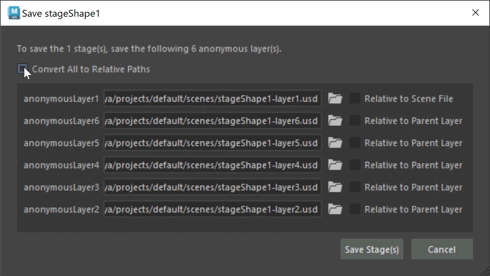

Save USD files as relative
When you save USD file(s) as relative to your Maya scene file, you can enable ease of access and with project handoffs of your Maya scene file. Relative pathing is especially useful in the case of if you would like to send a Maya scene file alongside a USD root file to another artist in another location. That artist will be able to open the Maya scene file and the USD layer files will be fully functional and portable alongside the Maya scene file.
Save a root USD file as relative to your Maya scene file
When you choose any of the following save/load processes for your root USD file, you can access the toggle to enable relative pathing:
Choose File > Save As, then select the
 icon next to an anonymous root layer
icon next to an anonymous root layer In the USD Layer Editor right-click an anonymous root layer > click Save As
In the USD Layer Editor > choose the bulk save icon
 > click on the folder icon beside the root layer (typically called
> click on the folder icon beside the root layer (typically called anonymousLayer1)Tip: In the bulk save dialog, you can type a freeform relative path into the input of the root layer and click Save Stage(s) to manually key in a relative path.In the Attribute Editor, when a stage is loaded, select the folder icon for the Stage Source File input to load in a USD file
Choose Create > Universal Scene Description > Stage from File >
In the USD Layer Editor, select Create > Stage from File >
With any of the above save/load processes, the following toggle appears beside your directory, under the heading File Options:
 Make Path Relative to Scene File: This toggle is unchecked by default and when off, your root file is an absolute path. If enabled, the path will be relative to your Maya scene file.
Make Path Relative to Scene File: This toggle is unchecked by default and when off, your root file is an absolute path. If enabled, the path will be relative to your Maya scene file. - Path Preview: This field previews the path of your chosen working directory for your USD file, if you have relative pathing enabled. Note: The path preview for the file can vary for each individual as the file is handed off.
When you have a chosen directory, your USD file named, and have  Make Path Relative to Scene File enabled, your USD file will be relative to where your saved Maya scene file is located. To verify or edit between absolute/relative path for your stage source file, you can choose the folder icon under Stage Source in the Attribute Editor, make changes to the toggle and then reload the stage source/ file path to enact changes.
Make Path Relative to Scene File enabled, your USD file will be relative to where your saved Maya scene file is located. To verify or edit between absolute/relative path for your stage source file, you can choose the folder icon under Stage Source in the Attribute Editor, make changes to the toggle and then reload the stage source/ file path to enact changes.
Save a USD reference file relative to the edit target layer
When adding a USD reference, you can load it relatively to where it will be defined in (the edit target layer).
Right click a USD prim and select Add USD Reference/Payload... > in the Add Reference to USD Prim reference dialog under File Options:
Enable
Make Path Relative to Edit Target Layer Directory: Enable this toggle to activate relative pathing to your current edit target layer’s directory. If this option is disabled, verify that your target layer is not anonymous and save it to disk.
Save sublayers relative to parent layers
When saving any anonymous sublayer, you can save it relative to your parent layer directory in one of the following methods:
Right-click on an anonymous sublayer > select Save As
In the USD Layer Editor > choose the bulk save icon
> click on the folder icon beside the anonymous sublayer Tip: In the bulk save dialog, you can type a freeform relative path into the input of the root layer and click Save Stage(s) to manually key in a relative path.In the USD Layer Editor > choose the load sublayer icon > click on the folder icon
beside the anonymous sublayer OR have a layer selected and right-click > Load Sublayers... from the contextual menu
In the Load Layers/ Load Sublayer(s) to
<LayerName>dialog under File Options:Enable
Make Path Relative to Parent Layer Directory: Enable to activate relative pathing to your current parent layer’s directory. If this option is disabled, verify that your parent layer is not anonymous and save it to disk.Tip: HoldShiftorControlto select multiple files and have them populate in the Load Layers dialog browser when complete.
Bulk save USD files relatively
- When you have an anonymous USD root layer file, and there is no Maya scene file saved to disk, click on the bulk save icon for your stage in the USD Layer Editor.
- Do one of the following as necessary to save your root USD layer as relative (this enables any other USD files in your hierarchy to be saved relatively as well):
- Select Relative to Scene File beside your root USD layer (
anonymouslayer1). - Click the folder icon beside the root layer (called
anonymouslayer1). The Set As dialog appears. Here you can name your file, locate a directory and select Make Path Relative to Scene File. Choose a directory, name the file and click Set. Then, in the bulk save dialog, you will see the path populated beside anonymousLayer1is the file name only. Tip: if you hover over your root layer (anonymouslayer1), you can see the tooltip indicating the directory or resolved path for your Maya scene file if it has been saved to disk. 
- Select
- Do any of the following to configure relative or aboslute paths for your files other than your root layer:
- Click Convert All to Relative Paths (recommended).
- Individually select checkboxes next to your anonymous layers to make them Relative to parent layer.
- Click the folder icon beside any layer to open the Set As dialog to locate a directory and select Make Path Relative to Parent Layer.
- Click
- Key in inputs for your paths as necessary:
- When you set a layer as relative, you can directly type into the file input and your file name will be preserved.
- If you directly type into the input a relative path like this
..\..\layer1.usd. This path and it's child layer's tooltip will update. This ensures your parent layer directory is mapped and any descendants when set as relative can be directed to that. As such, any parent/child layer directories sync updates as you toggle these checkboxes. - Verify your relative pathing by ensuring you don't have errors or warnings from the Script Editor.
- Click Save Stage(s). The following occurs:
- The USD root file is now saved as a relative path to the directory of the Maya scene file, once you save your Maya scene file.
- In the Attribute Editor, the File input when you have your stage selected is the absolute path of the directory you chose in the Set As dialog. This path changes to the relative path once you save your Maya scene file to disk.